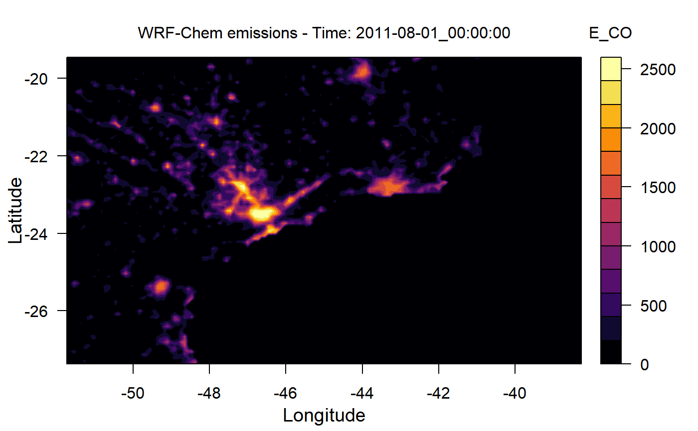

wrf_plot.RdCreate a quick plot from wrf emission file
wrf_plot(file = file.choose(), name = NA, time = 1, nivel = 1, barra = T, lbarra = 0.2, col = cptcity::cpt(n = 13), verbose = T, ...)
| file | emission file name |
|---|---|
| name | pollutant name |
| time | time from emission file |
| nivel | level from the emission file |
| barra | barblot if TRUE |
| lbarra | length of barplot |
| col | color vector |
| verbose | if TRUE print some information |
| ... | Arguments to be passed to plot methods |
If the file contains levels (kemit>1), and one frame (auxinput5_interval_m = 1) time with control the level which will be ploted
In case of an error related to plot.new() margins lbarra must be adjusted
Lights, to_wrf and wrf_create
{ dir.create(file.path(tempdir(), "EMISS")) wrf_create(wrfinput_dir = system.file("extdata", package = "eixport"), wrfchemi_dir = file.path(tempdir(), "EMISS")) # get the name of created file files <- list.files(path = file.path(tempdir(), "EMISS"), pattern = "wrfchemi", full.names = TRUE) # load end write some data in this emission file data(Lights) to_wrf(Lights, files[1], total = 1521983, name = "E_CO") wrf_plot(files[1], "E_CO") }#> Warning: '/tmp/RtmpumjWBr/EMISS' already exists#> writing emissions: E_CO weight 1 on file /tmp/RtmpumjWBr/EMISS/wrfchemi_d01_2011-08-01_00:00:00 #> /tmp/RtmpumjWBr/EMISS/wrfchemi_d01_2011-08-01_00:00:00 #> E_CO: #> Max value: 2481.08618164062, Min value: 0